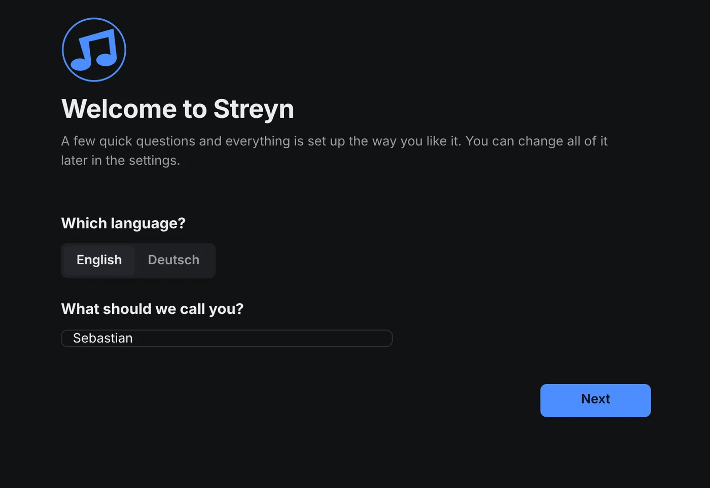
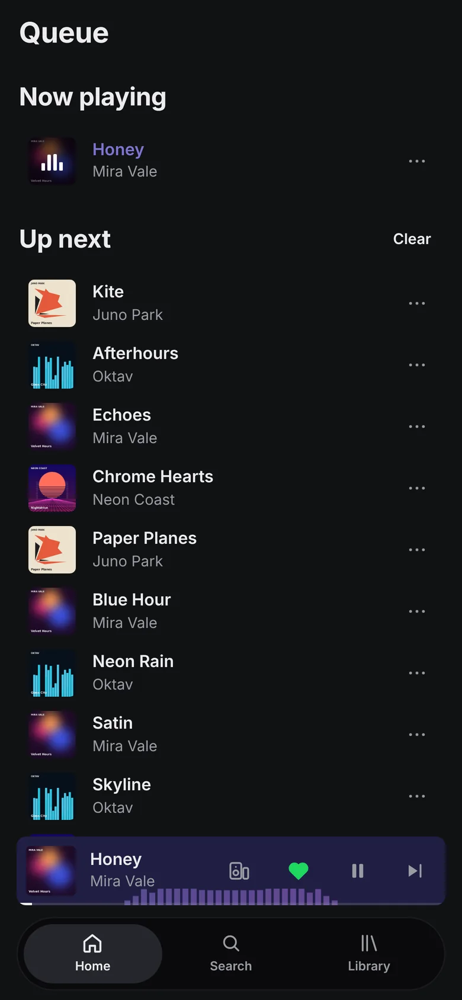
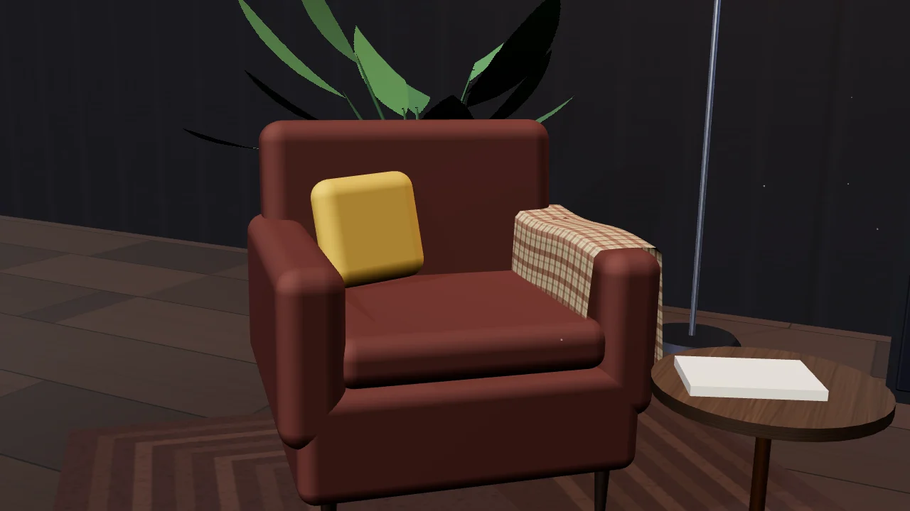
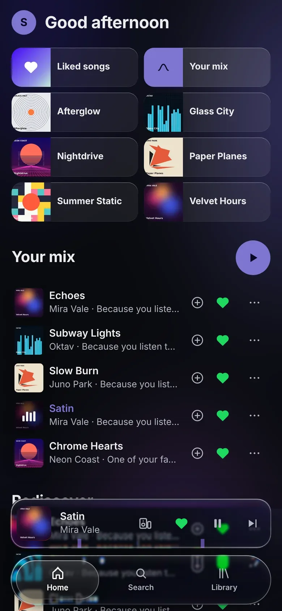
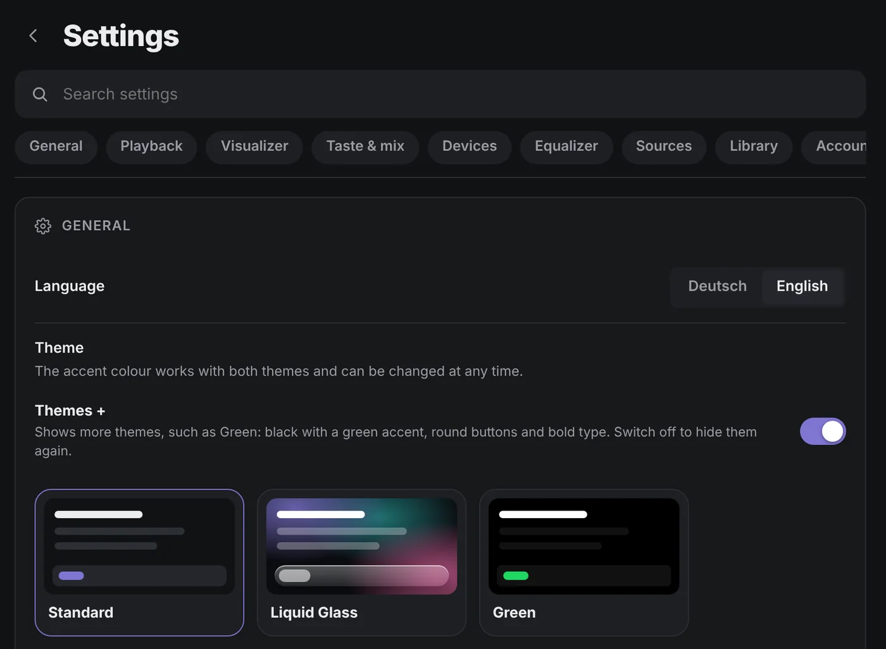

Streyn is your own music app. A small server at home keeps your music and learns your taste, the apps for Android, Windows, Linux and the browser play from it, at home and on the go.
Everything runs on your server: your songs, playlists, likes and the mix that learns from them. Spotify only adds names and covers, the sound of those songs is found on YouTube Music and streamed through your server.
Mixes made for youMix for you, Streyn Mixes, Top Songs and radio Three looksStandard, Liquid Glass and Green
Three looksStandard, Liquid Glass and Green ChillscreenA cosy room that plays your song
ChillscreenA cosy room that plays your song Listen anywhereAt home, on mobile data, offline
Listen anywhereAt home, on mobile data, offline Share and invitePublic links, contributors, listeners
Share and invitePublic links, contributors, listeners Spotify built inEvery song in full, through your server
Spotify built inEvery song in full, through your serverFrom zero to the first song in five steps. It takes about ten minutes.
http://192.168.1.50:8484.
Every step of the setup assistant can be skipped and changed later in Settings.
One command per system. Running it again later updates the server, your data stays.
Click the node in Proxmox, open Shell and paste:
bash -c "$(curl -fsSL https://raw.githubusercontent.com/Labtoso/Musik/main/deploy/proxmox.sh)"It creates a Debian 12 container (2 cores, 2 GB RAM, 8 GB disk), asks for an optional music folder on the host and whether you want Tailscale, then prints the address.
curl -fsSL https://raw.githubusercontent.com/Labtoso/Musik/main/deploy/install.sh | sudo bashInstalls the streyn service. Options go after bash -s --: --music /path, --port 8484, --tailscale, --no-tailscale, --ts-authkey …
curl -fsSL https://raw.githubusercontent.com/Labtoso/Musik/main/deploy/zimaos.sh | bashStreyn shows up as an app on the dashboard. Songs go into Media/Music.
git clone https://github.com/Labtoso/Musik.git && cd Musik && docker compose up -d --buildMusic goes into music/, data into data/, port 8484.
In PowerShell: try { Invoke-WebRequest https://github.com/Labtoso/Musik/releases/latest/download/streyn-server-windows-x64.exe -OutFile streyn-server.new.exe -ErrorAction Stop; Move-Item -Force streyn-server.new.exe streyn-server.exe; .\streyn-server.exe } catch { Remove-Item streyn-server.new.exe -ErrorAction Ignore; throw }. That always loads the newest server; run it again to update. Or download streyn-server-windows-x64.exe from the latest release and start it. It uses your Music folder. For another folder put MUSIC_DIRS=D:\Music into a .env next to the exe.
Put them in front of the command, for example MUSIC_HOST_DIR=/mnt/nas/music bash -c "…".
| Option | Meaning |
|---|---|
MUSIC_HOST_DIR | Host folder with your music, mounted read-only into the container |
CTID | Container number, otherwise the next free one |
CT_CORES CT_RAM CT_SWAP CT_DISK | Cores, RAM and swap in MB, disk in GB (2 / 2048 / 2048 / 8) |
CT_BRIDGE CT_STORAGE | Network bridge (vmbr0) and storage |
TAILSCALE=1 / 0 | Tailscale on or off without asking |
TS_AUTHKEY | Tailscale key, so you do not have to open a link |
PUBLIC=1 / 0 | Public links on or off |
Open the printed address in a browser or in an app and create the first account. Next: Get the apps.
Download from musik.labtoso.de, enter your server address once, done.
| Device | File | How |
|---|---|---|
| Android | Streyn.apk | Open it and allow installs from this source. Plays in the background with lock screen controls. |
| Windows | Streyn.exe | Run the setup. It installs for your user only into %LOCALAPPDATA%\Streyn, without admin rights, and starts Streyn. Remove it under Settings → Apps → Installed apps. Media keys work. |
| Linux | Streyn.AppImage | Make it executable and start it. |
| Browser | – | Open the server address, or Web player on the home page. |
chmod +x Streyn.AppImage && ./Streyn.AppImageEach app asks for the server address once, for example 192.168.1.50:8484, then runs the setup assistant. Change the address later under Settings → Change server.



Your own files always come first. Spotify, YouTube and others are optional, switched on under Settings → Sources.
Put them into the music folder (scanned every 30 minutes, or right away with Rescan library) or use Settings → Upload music. MP3, FLAC, M4A/AAC, OGG, WAV and WebM work. Title, artist, album, cover and lyrics come from the tags. Your own songs can be removed with Delete from server in their menu.
Every Spotify song plays in full. The server looks for the official upload and skips covers, live and remix versions. With Download to server in the menu of an imported playlist, the server keeps those songs as files, so they play without YouTube and work offline.
https://musik.labtoso.de/spotify.htmlThe owner of the developer app needs Premium, at most 5 users, and playlist contents only for your own or collaborative playlists. Copy other playlists into your library first, or import an Exportify CSV.
Library → Imported → Import: paste a link or pick a file. Songs you own play from your library, the rest through the source. Save as playlist turns it into a normal playlist.
| Source | Import |
|---|---|
| Spotify | Your playlists, liked songs, albums |
| YouTube, YouTube Music | Playlist link |
| SoundCloud | Playlist or track link |
| Deezer | Playlist or album link |
| File | CSV (e.g. Exportify), M3U, TXT |
The more you listen, the better the mix gets. Everything is worked out on your own server.
| On Home | What it is |
|---|---|
| Mix for you | Your favourites and new finds, sorted by your taste |
| Streyn Mixes | Daily Mixes, a mix per genre you play most and per favourite artist, each with its own cover. Keep one with +, tap its title or cover to give it your own name, description and cover |
| Spotify playlists | On the search page: Spotify's categories (charts, genres, moods …) with all their playlists, Spotify's own first. Open, play and save them like any playlist |
| Your Top Songs | A playlist per year with the songs you played most (up to 100). A play counts after 30 seconds |
| Start radio | In a song's menu: similar songs, and the queue keeps going |
| Smart shuffle | Favourites more often, never the same artist twice in a row |
Settings → Taste & mix sets how much comes from your own files and how much from streaming, and switches Streyn Mixes or Top Songs off. Take a single song out of your taste from its menu.
Menus open with a right click on the computer, a long press on the phone, or the … button.
Podcasts work like on Spotify. Search finds shows and episodes below the music, Browse all → Podcasts shows the charts of your country, categories, the shows you follow and where you left off.
Search forgives accents, umlauts and small typos. Shows and charts come from the public Apple Podcasts directory, the episodes from each show's own feed, the sound through your server. Shows that are only on Spotify appear in the search with Spotify connected and open in Spotify, because they have no public feed.
Tap the small player (phone) or the song in the player bar (computer) for the big player with lyrics, queue and visualizer.

A cosy room at night: a turntable plays the cover of your song, your queue hangs as polaroids on the wall, rain runs down the window and the camera glides through the room. Switch it on under Settings → Chillscreen, then open it with its button in the big player. Transitions to the music changes the shot on the beat or on the bar.



| Setting | Where | What it does |
|---|---|---|
| Crossfade, volume, quality | Settings → Playback | Songs blend into each other, all play equally loud, streaming quality from low to very high |
| Equalizer | Settings → Equalizer | 10 bands, preamp and presets. Works on songs from your server |
| Visualizer | Settings → Visualizer | Bars, ring or wave in the cover's colours, also as a thin strip under the mini player |
| Lyrics | Big player | Synced lyrics follow along, tap a line to jump there |
Settings → Devices shows where the music plays: phone, headphones or Bluetooth. Optional: pause when a device disconnects, continue when it comes back. You also see what plays on your other devices and can pause it or take it over with Play here.
The desktop app can show “Listening to Streyn” with the song in your Discord status. Switch it on under Settings → Playback.
Android asks once for “record audio” for the visualizer and for Bluetooth to show full device names. Nothing is recorded, and if you say no, it does not ask again.
Three looks, each in light or dark. Change it under Settings → General → Theme or in the setup assistant.


Green appears once you switch on Themes + above the theme picker.
Settings → General → Background puts a picture behind every theme: one of your own or one of ten ready-made ones (some with the Streyn logo). Two sliders below set its opacity and blur. Your own picture stays on this device.
The Streyn logo at the top left is also the Home button, on every device. Every song row has a heart next to the + that puts the song straight into your liked songs.
With Green on and a window at least 900 pixels wide, Streyn switches to three panels. On phones Green keeps its phone layout.
Green uses Figtree, a free font close to Spotify's. The other themes keep their own font.

At home the apps reach your server over Wi-Fi. With Tailscale they reach it from anywhere, with no port forwarding and nothing open to the internet.
The app tries the home address first and switches to the Tailscale address by itself when you are away.
The address is shown under Settings → On the go.
Create an auth key in the Tailscale admin under Settings → Keys:
read -rsp "Tailscale auth key: " key; echo
TAILSCALE=1 TS_AUTHKEY="$key" bash -c "$(curl -fsSL https://raw.githubusercontent.com/Labtoso/Musik/main/deploy/proxmox.sh)"
unset keyInstall Tailscale on that computer from tailscale.com/download, then set the address and restart the server:
REMOTE_URL=http://100.x.y.z:8484If Android stops Tailscale in the background, exclude it from battery optimisation.
Tap Share on a playlist or a song. With public links switched on, anyone can open it at musik.labtoso.de, no app and no account needed.
| Share as | What the other person can do |
|---|---|
| Link to listen | Listen in any browser, without signing in |
| Invite as contributor | Make an account on the page (or sign in), then add and remove songs |
| Invite as listener | Get the playlist in their library and always hear the latest version, without changing it |
Every song can be shared on its own, also songs from Spotify, YouTube or Deezer: open the ⋯ menu of a song and pick Share, or tap the share icon next to the heart in the big player. On a computer the link is copied right away, on the phone the share sheet opens. The page plays the song for anyone, and when you are signed in, Add to Liked Songs puts it in your Liked songs. Chat apps like Discord or WhatsApp show the title, artist and cover.
As the owner, tap a member to switch between contributor and listener, or × to remove them. To give someone a normal account on your server, use Settings → Users → Invite link (works once, for 7 days).
Run the Proxmox installer again and answer y to Switch on public links?, or:
TAILSCALE=1 PUBLIC=1 bash -c "$(curl -fsSL https://raw.githubusercontent.com/Labtoso/Musik/main/deploy/proxmox.sh)"See or change the address under Settings → On the go → Public links. Switch off with PUBLIC=0 or by clearing that field.
The server listens for public links on port 8485 (this computer only). On the computer with Tailscale:
tailscale funnel --bg --https=8443 http://127.0.0.1:8485Then set PUBLIC_URL=https://<name>.<tailnet>.ts.net:8443 and restart the server.
Through the public door, setup, updates, user management, scans, uploads and admin sign-ins are closed. Sign-ins are limited to 20 a minute, and one invitation makes at most 25 accounts.
Download lists in the Android or desktop app and they play without the server, on a plane or in a dead zone.
Open a playlist, Liked songs, an imported or a Spotify playlist and tap the download arrow next to Share. The bar fills as songs arrive. Tap again to remove it. A downloaded list follows changes on the server.
When the server cannot be reached, the app starts in offline mode by itself. It looks and works as usual, a bar on top has a button to go online again. The page where you enter the server address also has Use offline.
Settings → Offline lists what is stored on this device, with its size, and removes it. The folder button next to On this device opens where the songs lie: Explorer or your file manager on the PC, the Files app (under "Streyn") on Android.
Songs that only stream (Spotify, YouTube) are kept once they were downloaded to the server with Download to server. The web player in the browser has no offline mode.
The most common problems and how to fix them. Still stuck? Come on our Discord.
Check the address including the port (:8484) and that the phone is on the same Wi-Fi. http://ADDRESS:8484/api/info in a browser must show "app":"musik". In the container run systemctl status streyn.
Is Tailscale on and signed in with the same account on the phone? Exclude it from battery saving on Android. In the container run tailscale status.
Press Rescan library in Settings. With a host folder, check that MUSIC_HOST_DIR was set and is readable.
The redirect URI in the Spotify dashboard must be exactly https://musik.labtoso.de/spotify.html, and your Spotify account must be added as a user of the developer app.
Report the song with its name in a GitHub issue. The server prefers official uploads and skips covers, live and remix versions.
Versions before 1.8.0 were signed with a different key. Uninstall Streyn once and install the new Streyn.apk.
journalctl -u streyn -fCome on our Discord, we help you there.
A bar at the top tells you when a new version is out. Update does the rest, in the right order. Only an admin can update the server.
The server update shows live what it does, line by line. Before every update the database is copied to /var/lib/streyn/backups (the last 5 are kept).
| What | How |
|---|---|
| Proxmox | Run the installer again |
| Debian / Ubuntu | sudo streyn-update |
| Docker | git pull && docker compose up -d --build |
| Apps | Install the new version from the website over the old one |
The data folder is enough: /var/lib/streyn or data/. It holds the database, covers and uploaded songs. Easiest is a Proxmox backup of the container.
Settings live in /etc/streyn.env (container and Debian) or in a .env next to the server.
| Variable | Default | Meaning |
|---|---|---|
MUSIC_DIRS | Music folder | Song folders, several separated by : (Windows ;) |
PORT | 8484 | Server port |
DATA_DIR | data | Database, covers, uploads |
SCAN_INTERVAL | 30 | Minutes between automatic scans |
SERVER_NAME | Streyn | Name in the apps and on share pages |
REMOTE_URL | – | Address on the go (set by the installer with Tailscale) |
PUBLIC_URL | – | Address for public links (set by the installer) |
HOST | 0.0.0.0 | Address it listens on |
systemctl restart streyn| What | Container and Debian |
|---|---|
| Settings | /etc/streyn.env |
| Data | /var/lib/streyn |
| Music | /srv/streyn |
| Logs | journalctl -u streyn -f |
Streyn ist deine eigene Musik-App. Ein kleiner Server zuhause hält deine Musik und lernt deinen Geschmack, die Apps für Android, Windows, Linux und den Browser spielen davon ab, zuhause und unterwegs.
Alles läuft auf deinem Server: deine Songs, Playlists, Likes und der Mix, der daraus lernt. Spotify liefert nur Namen und Cover, den Ton dieser Songs findet der Server auf YouTube Music und streamt ihn an deine Apps.
Mixe für dichMix für dich, Streyn Mixes, Top-Songs und RadioDrei LooksStandard, Liquid Glass und GreenChillscreenEin gemütliches Zimmer, das deinen Song spieltÜberall hörenZuhause, mobil, offlineTeilen und einladenÖffentliche Links, Mitwirkende, ZuhörerSpotify eingebautJeder Song ganz, über deinen ServerIn fünf Schritten zum ersten Song. Das dauert etwa zehn Minuten.
http://192.168.1.50:8484.Jeden Schritt des Startassistenten kannst du überspringen und später in den Einstellungen ändern.
Ein Befehl pro System. Später noch mal ausgeführt, aktualisiert er den Server, deine Daten bleiben.
In Proxmox die Node anklicken, Shell öffnen und einfügen:
bash -c "$(curl -fsSL https://raw.githubusercontent.com/Labtoso/Musik/main/deploy/proxmox.sh)"Legt einen Debian-12-Container an (2 Kerne, 2 GB RAM, 8 GB Platte), fragt nach einem Musikordner auf dem Host (optional) und ob du Tailscale willst, und zeigt am Ende die Adresse.
curl -fsSL https://raw.githubusercontent.com/Labtoso/Musik/main/deploy/install.sh | sudo bashInstalliert den Dienst streyn. Optionen hinter bash -s --: --music /pfad, --port 8484, --tailscale, --no-tailscale, --ts-authkey …
curl -fsSL https://raw.githubusercontent.com/Labtoso/Musik/main/deploy/zimaos.sh | bashStreyn erscheint als App auf dem Dashboard. Songs kommen nach Media/Music.
git clone https://github.com/Labtoso/Musik.git && cd Musik && docker compose up -d --buildMusik in music/, Daten in data/, Port 8484.
In PowerShell: try { Invoke-WebRequest https://github.com/Labtoso/Musik/releases/latest/download/streyn-server-windows-x64.exe -OutFile streyn-server.new.exe -ErrorAction Stop; Move-Item -Force streyn-server.new.exe streyn-server.exe; .\streyn-server.exe } catch { Remove-Item streyn-server.new.exe -ErrorAction Ignore; throw }. Das lädt immer den neuesten Server; zum Updaten noch mal ausführen. Oder streyn-server-windows-x64.exe vom neuesten Release laden und starten. Er nimmt deinen Musik-Ordner. Für einen anderen Ordner MUSIC_DIRS=D:\Musik in eine .env neben der exe schreiben.
Vor den Befehl setzen, zum Beispiel MUSIC_HOST_DIR=/mnt/nas/music bash -c "…".
| Option | Bedeutung |
|---|---|
MUSIC_HOST_DIR | Ordner auf dem Host mit deiner Musik, nur lesend eingebunden |
CTID | Nummer des Containers, sonst die nächste freie |
CT_CORES CT_RAM CT_SWAP CT_DISK | Kerne, RAM und Swap in MB, Platte in GB (2 / 2048 / 2048 / 8) |
CT_BRIDGE CT_STORAGE | Netzwerk-Bridge (vmbr0) und Speicher |
TAILSCALE=1 / 0 | Tailscale an oder aus, ohne Frage |
TS_AUTHKEY | Tailscale-Schlüssel, dann musst du keinen Link öffnen |
PUBLIC=1 / 0 | Öffentliche Links an oder aus |
Die angezeigte Adresse im Browser oder in einer App öffnen und das erste Konto anlegen. Weiter mit Apps holen.
Auf musik.labtoso.de laden, einmal die Server-Adresse eintragen, fertig.
| Gerät | Datei | So geht’s |
|---|---|---|
| Android | Streyn.apk | Öffnen und Installation aus dieser Quelle erlauben. Spielt im Hintergrund, mit Steuerung auf dem Sperrbildschirm. |
| Windows | Streyn.exe | Setup starten. Es installiert nur für deinen Benutzer nach %LOCALAPPDATA%\Streyn, ohne Admin-Rechte, und startet Streyn. Entfernen unter Einstellungen → Apps → Installierte Apps. Medientasten gehen. |
| Linux | Streyn.AppImage | Ausführbar machen und starten. |
| Browser | – | Server-Adresse öffnen oder Webplayer auf der Startseite. |
chmod +x Streyn.AppImage && ./Streyn.AppImageJede App fragt einmal nach der Server-Adresse, zum Beispiel 192.168.1.50:8484, dann läuft der Startassistent. Die Adresse änderst du später unter Einstellungen → Server wechseln.
Deine eigenen Dateien kommen immer zuerst. Spotify, YouTube und andere sind optional und werden unter Einstellungen → Quellen eingeschaltet.
In den Musikordner legen (wird alle 30 Minuten eingelesen, sofort mit Bibliothek neu einlesen) oder Einstellungen → Musik hochladen. MP3, FLAC, M4A/AAC, OGG, WAV und WebM gehen. Titel, Künstler, Album, Cover und Songtexte kommen aus den Tags. Eigene Songs entfernst du mit Vom Server löschen im Menü.
Jeder Spotify-Song läuft ganz. Der Server nimmt den offiziellen Upload und überspringt Cover-, Live- und Remix-Versionen. Mit Auf den Server laden im Menü einer importierten Playlist behält der Server die Songs als Dateien, dann laufen sie ohne YouTube und auch offline.
https://musik.labtoso.de/spotify.htmlDer Besitzer der Entwickler-App braucht Premium, höchstens 5 Nutzer, und Playlist-Inhalte gibt es nur für eigene oder gemeinsame Playlists. Andere Playlists vorher in die eigene Bibliothek kopieren oder als Exportify-CSV importieren.
Bibliothek → Importiert → Importieren: Link einfügen oder Datei wählen. Songs, die du hast, spielen aus deiner Bibliothek, der Rest über die Quelle. Als Playlist speichern macht eine normale Playlist daraus.
| Quelle | Import |
|---|---|
| Spotify | Eigene Playlists, Lieblingssongs, Alben |
| YouTube, YouTube Music | Playlist-Link |
| SoundCloud | Playlist- oder Track-Link |
| Deezer | Playlist- oder Album-Link |
| Datei | CSV (z. B. Exportify), M3U, TXT |
Je mehr du hörst, desto besser wird der Mix. Alles wird auf deinem eigenen Server berechnet.
| Auf der Startseite | Was es ist |
|---|---|
| Mix für dich | Deine Favoriten und Neues, nach deinem Geschmack sortiert |
| Streyn Mixes | Daily Mixes, ein Mix pro Genre, das du am meisten hörst, und pro Lieblingskünstler, jeder mit eigenem Cover. Mit + behalten, Titel oder Cover antippen für eigenen Namen, Beschreibung und Cover |
| Spotify-Playlists | Auf der Suchseite: die Kategorien von Spotify (Charts, Genres, Stimmungen …) mit allen ihren Playlists, die von Spotify zuerst. Öffnen, abspielen und speichern wie jede Playlist |
| Deine Top-Songs | Eine Playlist pro Jahr mit deinen meistgehörten Songs (bis 100). Ein Abspielen zählt nach 30 Sekunden |
| Radio starten | Im Menü eines Songs: Ähnliches, die Warteschlange läuft weiter |
| Schlaues Mischen | Favoriten öfter, nie zweimal derselbe Künstler hintereinander |
Einstellungen → Geschmack & Mix legt fest, wie viel aus deinen Dateien und wie viel aus dem Streaming kommt, und schaltet Streyn Mixes oder Top-Songs aus. Einen einzelnen Song nimmst du über sein Menü aus deinem Geschmack.
Menüs öffnest du mit Rechtsklick am Computer, langem Drücken am Handy oder dem Knopf ….
Podcasts funktionieren wie bei Spotify. Die Suche findet Shows und Folgen unter der Musik, Alles durchsuchen → Podcasts zeigt die Charts deines Landes, Kategorien, deine Shows und wo du stehen geblieben bist.
Die Suche verzeiht Akzente, Umlaute und kleine Tippfehler. Shows und Charts kommen aus dem öffentlichen Apple-Podcasts-Verzeichnis, die Folgen aus dem Feed der Show, der Ton über deinen Server. Shows, die es nur auf Spotify gibt, erscheinen mit verbundenem Spotify in der Suche und öffnen sich in Spotify, weil sie keinen öffentlichen Feed haben.
Auf den kleinen Player (Handy) oder den Song in der Player-Leiste (Computer) tippen öffnet den großen Player mit Songtext, Warteschlange und Visualizer.
Ein gemütliches Zimmer bei Nacht: Ein Plattenspieler spielt das Cover deines Songs, deine Warteschlange hängt als Polaroids an der Wand, Regen läuft übers Fenster und die Kamera gleitet durch den Raum. Unter Einstellungen → Chillscreen einschalten und im großen Player über seinen Knopf öffnen. Übergänge zur Musik wechselt die Einstellung im Takt oder pro Takt-Gruppe.
| Einstellung | Wo | Was sie macht |
|---|---|---|
| Überblenden, Lautstärke, Qualität | Einstellungen → Wiedergabe | Songs gehen ineinander über, alle gleich laut, Streaming-Qualität von niedrig bis sehr hoch |
| Equalizer | Einstellungen → Equalizer | 10 Bänder, Vorverstärkung und Presets. Wirkt auf Songs von deinem Server |
| Visualizer | Einstellungen → Visualizer | Balken, Kreis oder Welle in den Farben des Covers, auch als dünner Streifen unter dem Mini-Player |
| Songtexte | Großer Player | Synchrone Texte laufen mit, Tipp auf eine Zeile springt hin |
Einstellungen → Geräte zeigt, wo die Musik spielt: Handy, Kopfhörer oder Bluetooth. Optional: Pause beim Trennen, weiterspielen, wenn das Gerät zurückkommt. Du siehst auch, was auf deinen anderen Geräten läuft, und kannst es anhalten oder mit Hier abspielen übernehmen.
Die Desktop-App zeigt auf Wunsch „Hört Streyn“ mit dem Song in deinem Discord-Status. Einschalten unter Einstellungen → Wiedergabe.
Android fragt einmal nach „Audio aufnehmen“ für den Visualizer und nach Bluetooth für volle Gerätenamen. Aufgenommen wird nichts, und nach einem Nein fragt die App nicht noch mal.
Drei Looks, jeder hell oder dunkel. Ändern unter Einstellungen → Allgemein → Design oder im Startassistenten.
Green erscheint, sobald du über dem Design-Wähler Themes + einschaltest.
Einstellungen → Allgemein → Hintergrund legt ein Bild hinter jedes Design: ein eigenes oder eines von zehn fertigen (manche mit dem Streyn-Logo). Mit den zwei Reglern darunter stellst du Deckkraft und Unschärfe ein. Dein eigenes Bild bleibt auf diesem Gerät.
Das Streyn-Logo oben links ist auch der Home-Knopf, auf jedem Gerät. Jede Songzeile hat neben dem + ein Herz, das den Song direkt in deine Lieblingssongs legt.
Wenn Green an ist und das Fenster mindestens 900 Pixel breit ist, zeigt Streyn drei Bereiche nebeneinander. Am Handy bleibt Green beim Handy-Layout.
Green nutzt Figtree, eine freie Schrift nahe an der von Spotify. Die anderen Designs behalten ihre Schrift.
Zuhause erreichen die Apps deinen Server über das WLAN. Mit Tailscale überall, ohne Portfreigabe und ohne dass etwas offen im Internet steht.
Die App probiert zuerst die Adresse zuhause und wechselt unterwegs von selbst auf die Tailscale-Adresse.
Die Adresse steht unter Einstellungen → Unterwegs.
In der Tailscale-Verwaltung unter Settings → Keys einen Auth-Key anlegen:
read -rsp "Tailscale auth key: " key; echo
TAILSCALE=1 TS_AUTHKEY="$key" bash -c "$(curl -fsSL https://raw.githubusercontent.com/Labtoso/Musik/main/deploy/proxmox.sh)"
unset keyTailscale auf dem Rechner installieren (tailscale.com/download), dann die Adresse eintragen und den Server neu starten:
REMOTE_URL=http://100.x.y.z:8484Beendet Android Tailscale im Hintergrund, nimm es von der Akku-Optimierung aus.
In einer Playlist oder bei einem Song auf Teilen tippen. Mit öffentlichen Links öffnet sie jeder auf musik.labtoso.de, ohne App und ohne Konto.
| Teilen als | Was die andere Person kann |
|---|---|
| Link zum Anhören | In jedem Browser reinhören, ohne Anmeldung |
| Als Mitwirkenden einladen | Auf der Seite ein Konto anlegen (oder anmelden), dann Songs hinzufügen und entfernen |
| Als Zuhörer einladen | Die Playlist in der eigenen Bibliothek haben und immer die neueste Version hören, ohne sie zu ändern |
Jeder Song lässt sich einzeln teilen, auch Songs von Spotify, YouTube oder Deezer: Im ⋯-Menü eines Songs auf Teilen tippen, oder im großen Player auf das Teilen-Symbol neben dem Herz. Am Computer wird der Link sofort kopiert, am Handy öffnet sich das Teilen-Menü. Die Seite spielt den Song für jeden ab, und wer angemeldet ist, legt ihn mit Zu Lieblingssongs hinzufügen in die eigenen Lieblingssongs. Chat-Apps wie Discord oder WhatsApp zeigen Titel, Künstler und Cover.
Als Besitzer tippst du auf ein Mitglied, um zwischen Mitwirkend und Zuhörer zu wechseln, oder auf ×, um es zu entfernen. Ein normales Konto auf deinem Server gibst du jemandem mit Einstellungen → Nutzer → Einladungslink (einmal gültig, 7 Tage).
Den Proxmox-Installer noch mal ausführen und bei Switch on public links? mit y antworten, oder:
TAILSCALE=1 PUBLIC=1 bash -c "$(curl -fsSL https://raw.githubusercontent.com/Labtoso/Musik/main/deploy/proxmox.sh)"Die Adresse siehst und änderst du unter Einstellungen → Unterwegs → Öffentliche Links. Ausschalten mit PUBLIC=0 oder indem du das Feld leerst.
Der Server hört für öffentliche Links auf Port 8485 (nur auf diesem Rechner). Auf dem Rechner mit Tailscale:
tailscale funnel --bg --https=8443 http://127.0.0.1:8485Dann PUBLIC_URL=https://<name>.<tailnet>.ts.net:8443 eintragen und den Server neu starten.
Durch die öffentliche Tür sind Einrichtung, Updates, Nutzerverwaltung, Scans, Uploads und Admin-Anmeldungen gesperrt. Anmeldungen sind auf 20 pro Minute begrenzt, und eine Einladung reicht für höchstens 25 Konten.
Listen in der Android- oder Desktop-App herunterladen, dann spielen sie ohne Server, im Flugzeug oder im Funkloch.
Eine Playlist, Lieblingssongs, eine importierte oder eine Spotify-Playlist öffnen und auf den Pfeil neben Teilen tippen. Der Balken füllt sich mit jedem Song. Noch mal tippen entfernt sie. Eine geladene Liste folgt Änderungen auf dem Server.
Ist der Server nicht erreichbar, startet die App von selbst offline. Sie sieht aus und funktioniert wie immer, eine Leiste oben hat einen Knopf, um wieder online zu gehen. Auf der Seite für die Server-Adresse gibt es außerdem Offline nutzen.
Einstellungen → Offline zeigt, was auf diesem Gerät liegt und wie groß es ist, und entfernt es. Der Ordner-Knopf neben Auf diesem Gerät öffnet den Speicherort: Explorer oder Dateimanager am PC, die Dateien-App (unter „Streyn") auf Android.
Songs, die nur streamen (Spotify, YouTube), bleiben offline, sobald sie mit Auf den Server laden auf dem Server liegen. Der Webplayer im Browser hat keinen Offline-Modus.
Die häufigsten Probleme und wie du sie löst. Hängst du fest? Komm auf unseren Discord.
Adresse mit Port (:8484) prüfen und ob das Handy im selben WLAN ist. http://ADRESSE:8484/api/info im Browser muss "app":"musik" zeigen. Im Container systemctl status streyn ausführen.
Ist Tailscale auf dem Handy an und mit demselben Konto angemeldet? Auf Android von der Akku-Optimierung ausnehmen. Im Container tailscale status ausführen.
In den Einstellungen Bibliothek neu einlesen drücken. Bei einem Host-Ordner prüfen, ob MUSIC_HOST_DIR gesetzt war und lesbar ist.
Die Redirect URI im Spotify-Dashboard muss genau https://musik.labtoso.de/spotify.html sein, und dein Spotify-Konto muss als Nutzer der Entwickler-App eingetragen sein.
Melde den Song mit Namen in einem GitHub-Issue. Der Server nimmt offizielle Uploads zuerst und überspringt Cover-, Live- und Remix-Versionen.
Versionen vor 1.8.0 hatten einen anderen Schlüssel. Streyn einmal deinstallieren und die neue Streyn.apk installieren.
journalctl -u streyn -fKomm auf unseren Discord, dort helfen wir dir.
Eine Leiste oben sagt dir, wenn eine neue Version da ist. Updaten macht den Rest, in der richtigen Reihenfolge. Den Server darf nur ein Admin updaten.
Das Server-Update zeigt live, was es macht, Zeile für Zeile. Vor jedem Update wird die Datenbank nach /var/lib/streyn/backups kopiert (die letzten 5 bleiben).
| Was | Wie |
|---|---|
| Proxmox | Installer noch mal ausführen |
| Debian / Ubuntu | sudo streyn-update |
| Docker | git pull && docker compose up -d --build |
| Apps | Neue Version von der Website drüber installieren |
Der Datenordner reicht: /var/lib/streyn bzw. data/. Darin liegen Datenbank, Cover und hochgeladene Songs. Am einfachsten ist ein Proxmox-Backup des Containers.
Die Einstellungen stehen in /etc/streyn.env (Container und Debian) oder in einer .env neben dem Server.
| Variable | Standard | Bedeutung |
|---|---|---|
MUSIC_DIRS | Musik-Ordner | Ordner mit Songs, mehrere mit : (Windows ;) |
PORT | 8484 | Port des Servers |
DATA_DIR | data | Datenbank, Cover, Uploads |
SCAN_INTERVAL | 30 | Minuten zwischen automatischen Scans |
SERVER_NAME | Streyn | Name in den Apps und auf Teilen-Seiten |
REMOTE_URL | – | Adresse für unterwegs (setzt der Installer bei Tailscale) |
PUBLIC_URL | – | Adresse für öffentliche Links (setzt der Installer) |
HOST | 0.0.0.0 | Adresse, auf der er lauscht |
systemctl restart streyn| Was | Container und Debian |
|---|---|
| Einstellungen | /etc/streyn.env |
| Daten | /var/lib/streyn |
| Musik | /srv/streyn |
| Logs | journalctl -u streyn -f |